How to play
Hana-Awase
You will need
- A set of hanafuda
Note: The rules to Hana-awase are similar to Koi-koi.
Terms
- hanafuda - the name of the deck of cards.
- a month - 1 of the 12 ranks that makes up the deck.
- the Oya (親, parent) - the dealer.
- Field - the face-up cards in the middle of the table.
- Draw pile - the pile of cards remaining from the deal, placed next to the field.
- Point pile - where you put your matched cards on the table.
- a yaku - special combinations of cards that score points.
Deal
Choose an Oya by having all players pick a random card from the deck. Whichever player has the earliest Month is the Oya. Retry on a draw.
The Oya deals out the cards:
~For 2 players: Deal 10 cards to each player, and 8 cards to the field.
~For 3 players: Deal 7 cards to each player, and 6 cards to the field.
~For 4 players: Deal 5 cards to each player, and 8 cards to the field.
If 4 cards of the same month are dealt to the field, re-deal the round.
Set the rest of the cards aside to form the draw pile.
Play
Play begins with the Oya, with each turn having two stages:
- Match 1 card from your hand with a card on the field, or place a card on the field if you cannot make a match.
- Match 1 card from the top of the draw pile with a card on the field, or place the card on the field if you cannot make a match.
At either stage of your turn:
- If you have a choice between 2 cards on the field to match with, you must choose 1 to collect.
- If you have a choice between 3 cards on the field to match with, you must collect all 3.
Matched cards then go to your point pile, face up.
Tip: It's a good idea to organise your point pile into the different Types to help you identify yaku.
Play continues counter-clockwise until the draw pile is exhausted.
Scoring
A player's score for the round is calculated by adding up the card points, plus the yaku points in that player's point pile.
Card points
For each card in your point pile, add its value to your card score with the following table:
| Type | Value | # in deck |
|---|---|---|
| Lights | 20 | 5 |
| Animals | 10 | 9 |
| Ribbons | 5 | 10 |
| Chaff | 1 | 24 |
Example: If you have 2 Lights and 4 Chaff in your point pile, then you'd have 44 points.
Then, calculate the value of the yaku in your points pile, and add the two numbers together.
The player with the highest score at the end of each round becomes the Oya for the next round. If there's a tie, it's whoever is earlier in the turn order.
Yaku
Note: The Light yaku, the Seven Slips and Six Slips yaku, and the Viewing yaku are each mutually exclusive, meaning only the highest-valued yaku in each of those groups counts towards scoring.
Light yaku
Five Lights (5 light cards) - 100 points
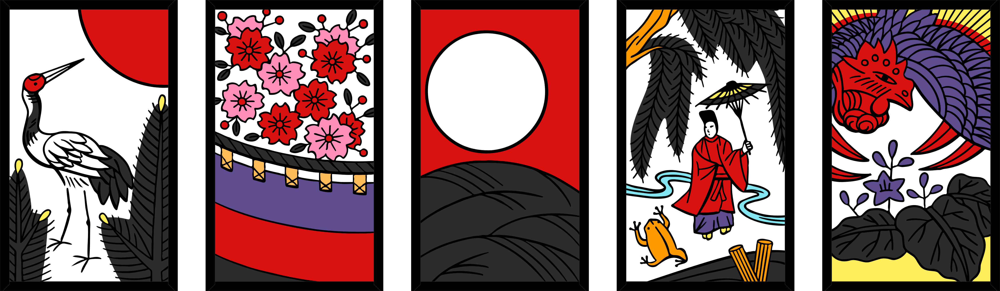
Four Lights (any 4 light cards) - 60 points

Spring Lights (the Jan Light, the Feb Animal, and the Mar Light) - 30 points
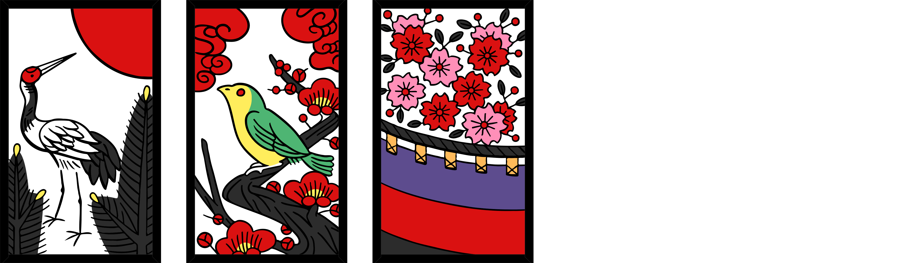
Pine, Paulownia, Moon - 20 points
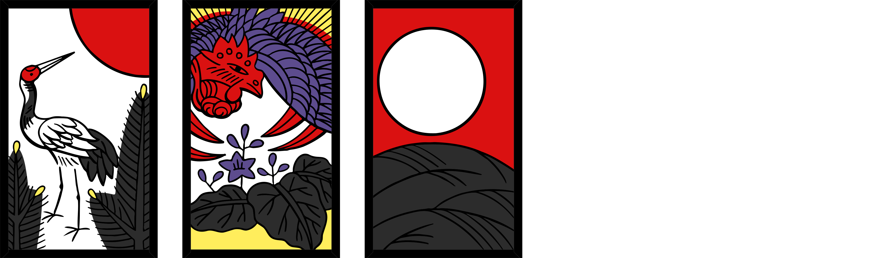
Slip yaku
Seven Slips (any 7 slips excl. Willow Slip) - 40 points
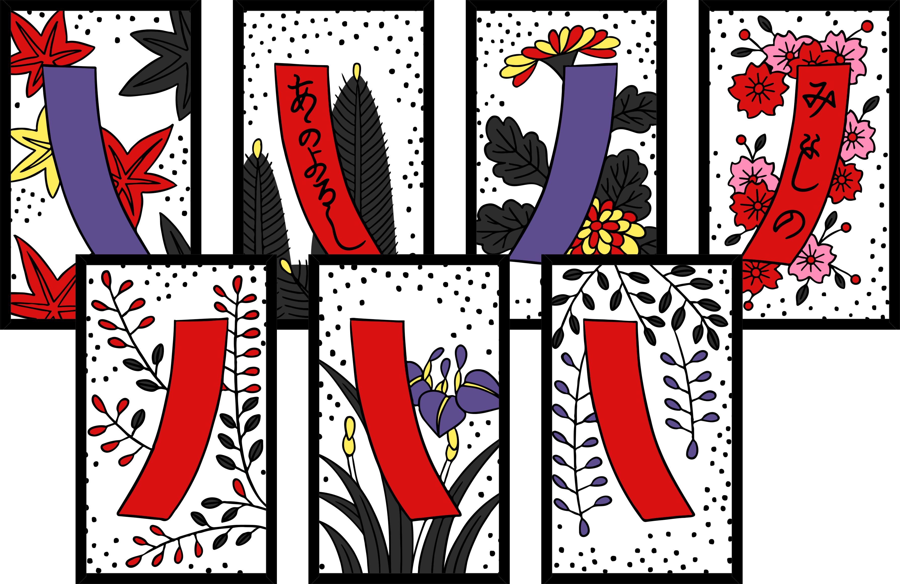
Six Slips (any 6 slips excl. Willow Slip) - 30 points
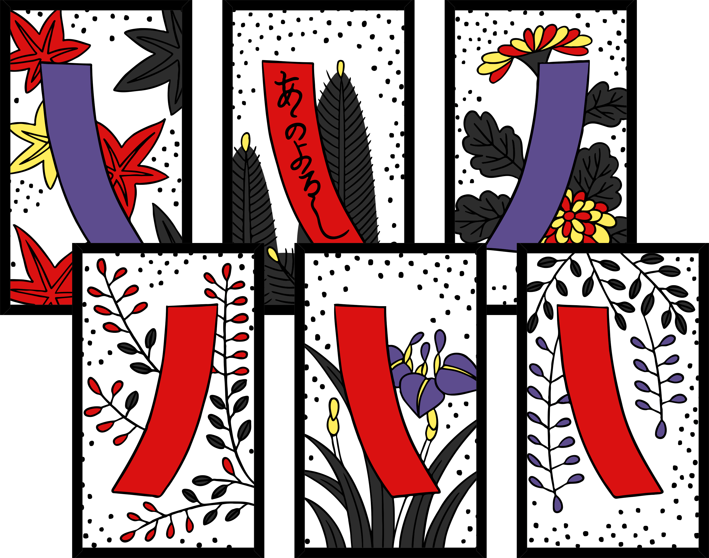
Poetry Slips - 40 points
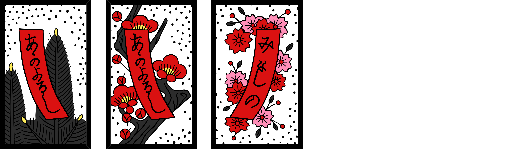
Blue Slips - 40 points

Grass Slips (excl. Willow Slip) - 20 points
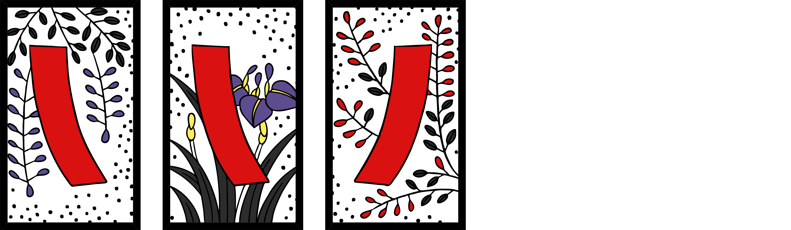
Animal yaku
Boar-Deer-Butterfly - 20 points

Viewing yaku
Drinking - 40 points
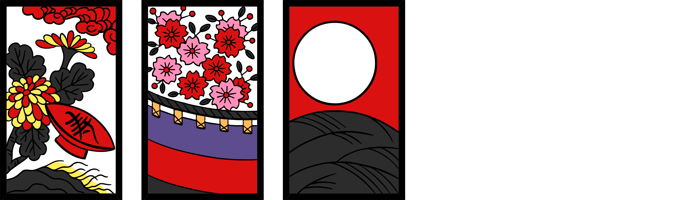
Flower Viewing - 20 points
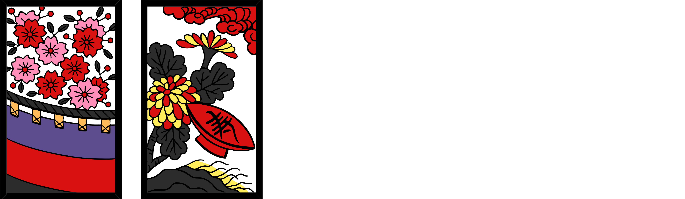
Moon Viewing - 20 points
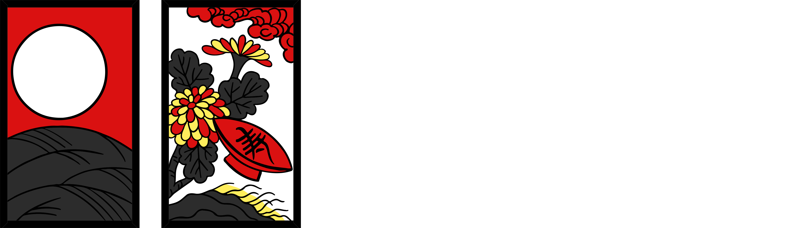
Four-of-a-kind yaku
Willow row - 10 points
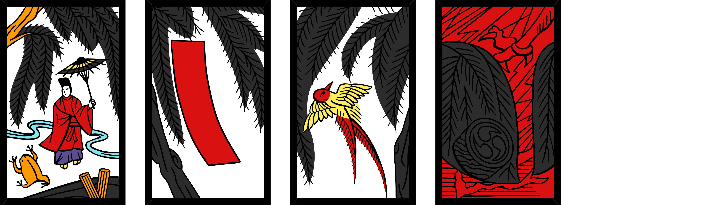
Wisteria row - 10 points
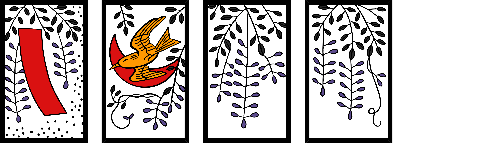
Paulownia row - 10 points
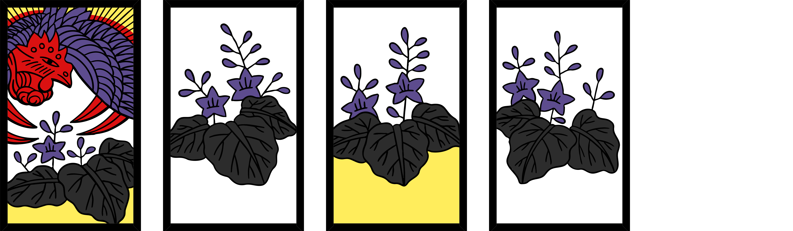
Card List
January - Pine
 Light (Sun) • Slip (Poetry) • Chaff • Chaff
Light (Sun) • Slip (Poetry) • Chaff • Chaff
February - Plum Blossom
 Slip (Poetry) • Animal (Bush warbler) • Chaff • Chaff
Slip (Poetry) • Animal (Bush warbler) • Chaff • Chaff
March - Cherry Blossom
 Light (Curtain) • Slip (Poetry) • Chaff • Chaff
Light (Curtain) • Slip (Poetry) • Chaff • Chaff
April - Wisteria
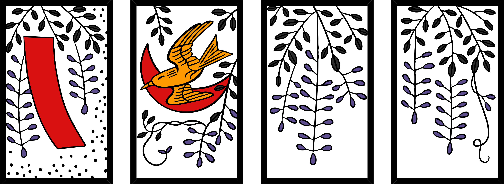 Slip (Red) • Animal (Cuckoo) • Chaff • Chaff
May - Iris
 Slip (Red) • Animal (Eight-plank-bridge) • Chaff • Chaff
Slip (Red) • Animal (Eight-plank-bridge) • Chaff • Chaff
June - Peony
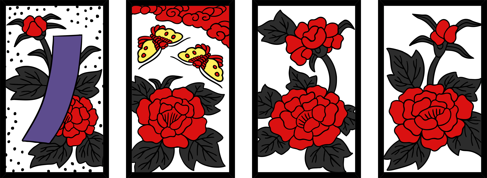 Slip (Blue) • Animal (Butterflies) • Chaff • Chaff
July - Bush Clover
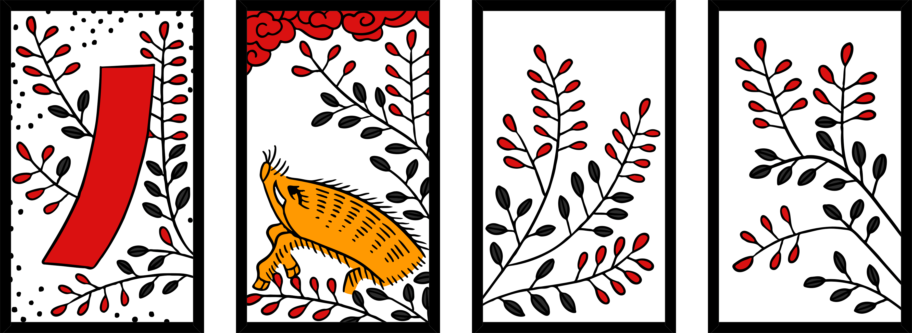 Slip (Red) • Animal (Boar) • Chaff • Chaff
August - Susuki Grass
 Light (Moon) • Animal (Geese) • Chaff • Chaff
Light (Moon) • Animal (Geese) • Chaff • Chaff
September - Chrysanthemum
 Slip (Blue) • Animal/Chaff (Sake Cup) • Chaff • Chaff
Slip (Blue) • Animal/Chaff (Sake Cup) • Chaff • Chaff
October - Maple
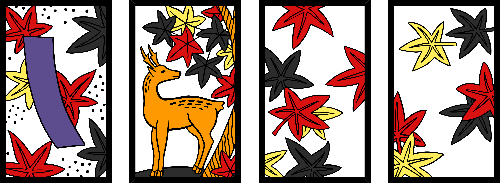 Slip (Blue) • Animal (Deer) • Chaff • Chaff
November - Willow
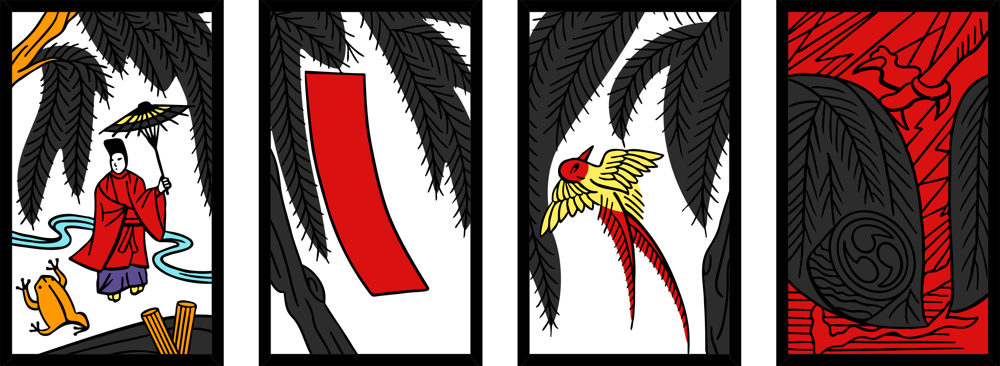 Light (Rain Man) • Slip (Red) • Animal (Swallow) • Chaff
December - Paulownia
 Light (Dragon) • Chaff • Chaff • Chaff
Light (Dragon) • Chaff • Chaff • Chaff
Note-worthy cards
There are 3 note-worthy cards:

- The Bush Warbler acts as a pseudo-Light card for the Spring yaku, but isn't counted as a Light card.
- The Eight-Plank-Bridge is an Animal card, despite it not depicting one.
- The Lightning card is in the November suit, despite it appearing not to depict any willow at a glance.